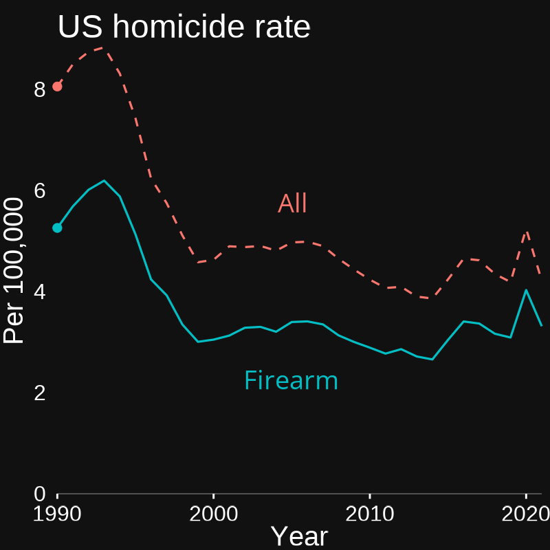
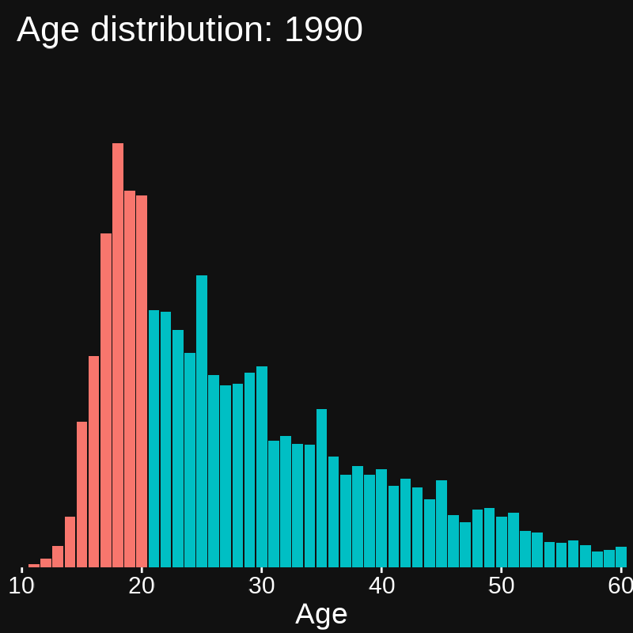
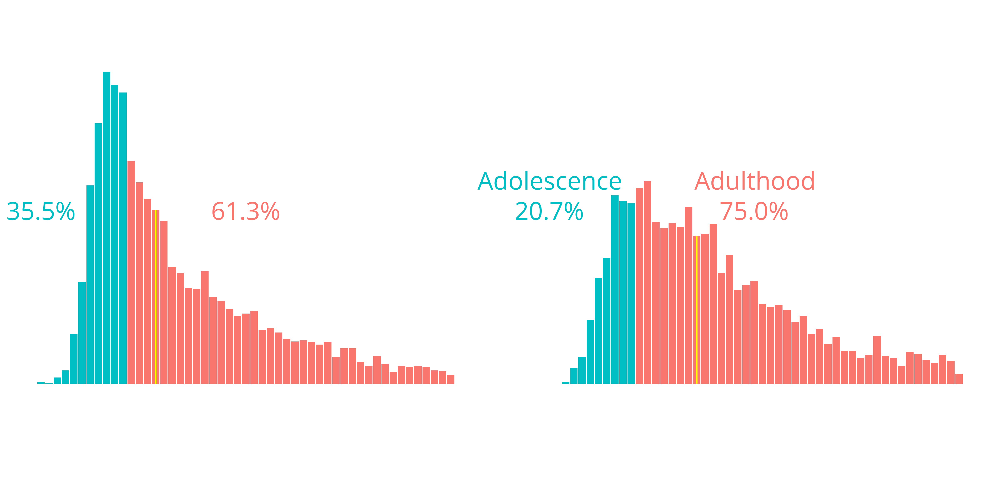
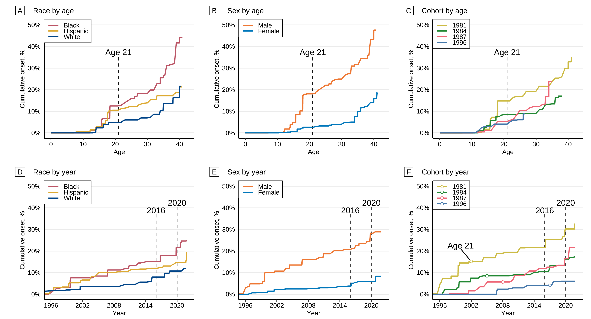
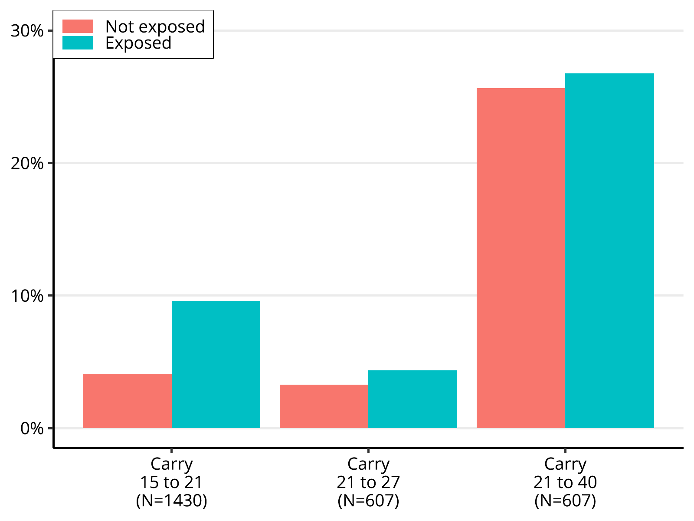

Life-course processes
as cause and effect
of change in gun violence
| Charles C. Lanfear | University of Cambridge |
| Robert J. Sampson | Harvard University |
Homicide in the US

Homicides increasingly use guns
Homicide in Chicago
This is exaggerated in cities where recent spikes were largest
Test


Gun homicide is increasingly by adults
Age and period effects on gun carrying
Different drivers by life stage
Questions
- How does macro-context impact carrying across life course?
- How does life-course variation in carrying impact rates of violence?
An abstract boat
A concrete boat
- Cohorts born 1981, 1984, 1987, and 1996
- Average ages 25 to 40 in 2021
New Questions
Feedback and Questions
Contact:
Charles C. Lanfear
Institute of Criminology
University of Cambridge
cl948@cam.ac.uk
For more about the PHDCN+:
PHDCN@fas.harvard.edu
https://sites.harvard.edu/phdcn/
https://doi.org/10.1007/s40865-022-00203-0